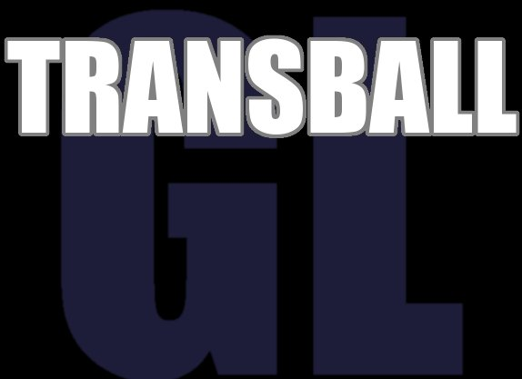
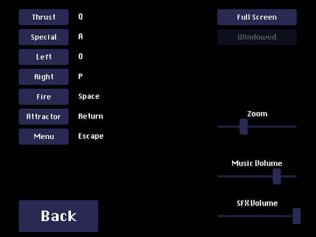

"Transbal GL" is the sequel of Super Transball 2,
Inspired in thrustb> type of games (and concretely in Zara Thrusta for the Amiga 500). In each level of Transball, the goal is to find the sphere, capture it and carry it to the upper part of the level. The main obstacle is gravity, that pulls you towards the ground. But many other obstacles such as canons, tanks, lasers, etc. will try to make your journey difficult...
As previous Transball games, Transball GL is not an easy game, you will need lots of practice to unlock all the ships and complete all the levels!
You can watch a Youtube video of the game here
How to Play
In Transball, you control a small ship through a series of levels. In each level, you need to find the sphere, and take it all the way to the top of the level. The main problem is that if you ship touches anything, it will be destroyed. So, you need to avoid colliding with walls, bullets, lasers, etc. Gravity always pulls you downwards, and you need to use your thrusters to prevent your ship from crashing into the ground, as well as for navigating through the level.
The controls of the game are shown in the following screenshot (they are all configurable through the Options screen accessible both from the main menu, and during game).

Controls:
- Thrust: propels your ship forward. Look out, since thrusting uses fuel, and you only have a limited amount (fuel is displayed at the top-left of the screen).
- Left/Right: with this, you can turn your ship left and right.
- Fire: to fire bullets and kill enemies. Notice that firing bullets also uses fuel!
- Attractor: once you get close enough to the sphere, you need to capture it with the attractor. The attractor will only work, however, if your ship is moving slowly.
- Special: some ships have special abilities (force fields, additional back or side thrusters, etc.), which are activated using this key.
- Menu: to access the options menu at any time during the game (also letting you pause the game, or quit the current level).
To play the game:
Click Play from the title screen.
You will then see the level selection screen, where you can select which level you want to play (left), which ship you want to play with (right), or whether you want to load a different level pack. You will see a little tutorial explaining you the special abilities of the ship you currently have selected on the right part of the screen. Press "F" to make that tutorial full-screen.
In the left-part of the screen you will see the list of levels in the current level pack (three at a time). Use the up and down arrows to navigate through the levels (but you need to beat a level before you can play the next!). Those levels that have been unlocked have the "play" button highlighted. PRess this button to start playing. Also, for those levels you have already beaten, you will see the "view replay" button highlighted, to see the replay of your best game (the one with the lowest time) for that level.
The Ships
You can choose between twelve types of ships for accomplishing your goal. Each one of the ships has its own characteristics. However, only three of them are available at the beginning, you will have to unlock the remaining of them by accumulating points. You get points for completing levels (harder levels give more points). Also, completing the same level with different ships gives you extra points.
These are the first three ships that you have access to:
- V-Panther 2: this is the ship that you controlled in the original Transball and Transball 2 games. It's a well balanced ship with medium speed, medium powered weapons (2 shots to kill a standard canon), and no special abilities nor handicaps.
- X-Terminator: this is a very powerful ship. It's missiles can kill a standard canon with only one shot. However, this is also a very heavy ship, and thus it's much slower than other ships.
- The Shadow Runner: this is a very fast ship. It is also equipped with "retro thrusters" (which can be activated with the Special key). These can be used to thrust backwards. They are not very powerful, but can save your life in many occasions! It's main drawback is that the bullets is shoots have a very low destructive power (it requires 4 shots to destroy a standard canon).
There are nine other ships however. Some of them fire lasers rather than bullets, some have forcefields, homing missiles, and even a grappling hook to hold on to the ball! Unlock them all to play with your favorite ship!
Level Packs, Player Profiles, Highscores, etc.
When you play Transball GL for the first time, it will ask you to create a player profile. This will store which levels you have already completed, how many ships have you unlocked, etc. So, different people can play in the same computer with different profiles. In the future, I'd like this to be synced on-line, so people can compete on-line, but that's not implemented yet.
Scoring in Transball GL has two parts:
- Points: each time you complete a level with a new ship, you get points. The more points you get the more ships you unlock.
- Time: Transball GL keeps track of the time you took to beat each level, and stores the lowest time (including a replay of such game). When you tie with another player in points, time is used to resolve the tie. Try to beat each level as fast as possible!
Transball GL lets you load different level packs. A level pack is a set of levels of increasing difficulty. By default, the game comes with two level packs: Transball GL (the default level pack), and the Expert Pack (a collection of short levels of insane difficulty).
Each time you finish a game (whether you beat the level or not), you will have the opportunity to save the replay. Select the "replays" option from the main menu to see all the replays you saved. Replays of the best games you play in each level are saved automatically, and can be accessed directly from the level selection screen
Map Editor